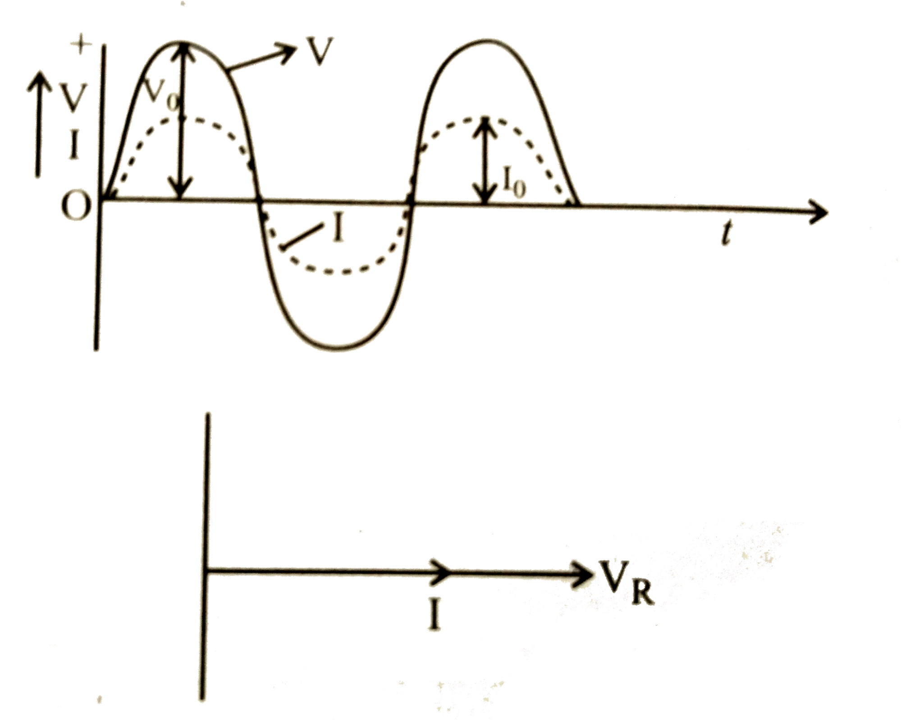
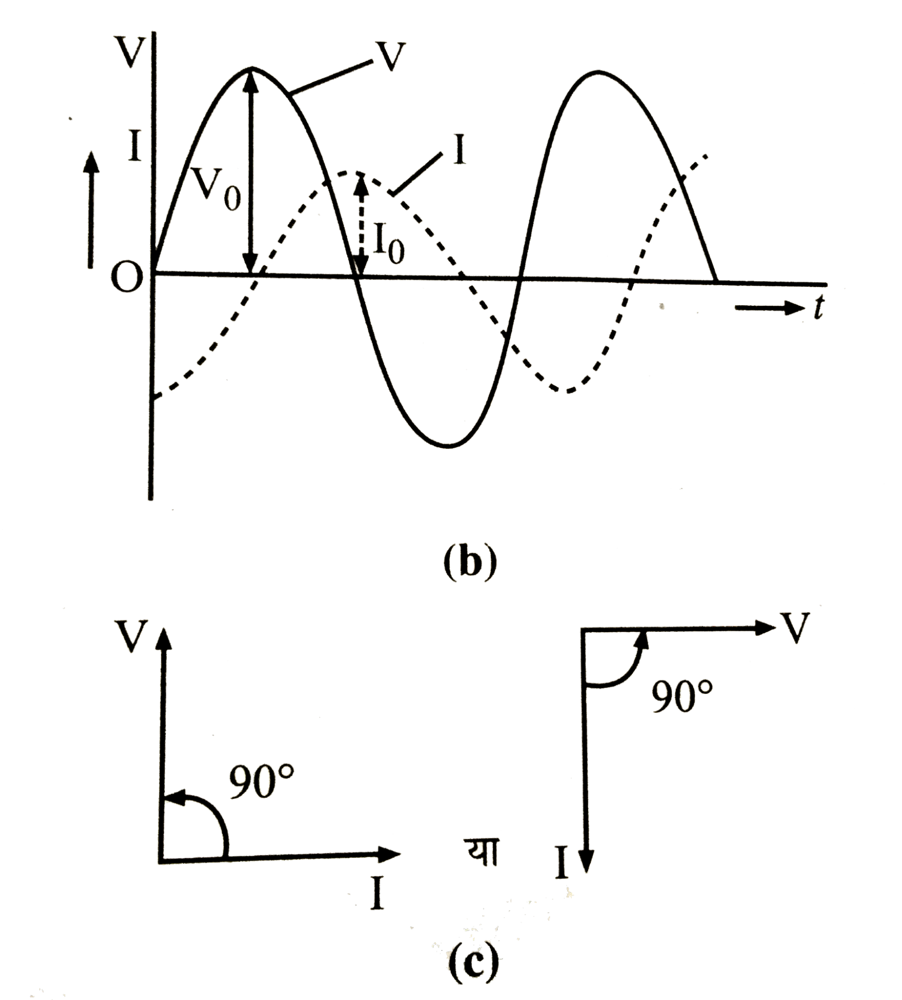
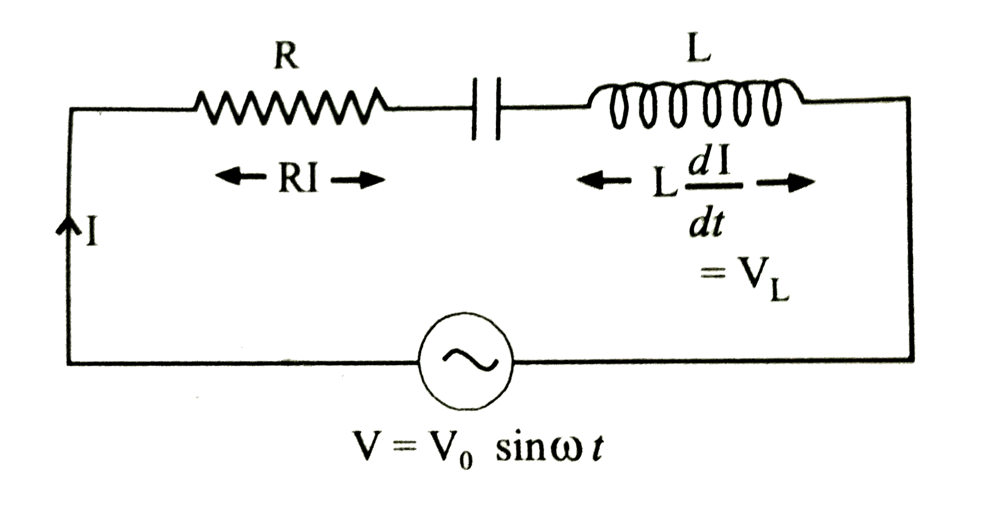
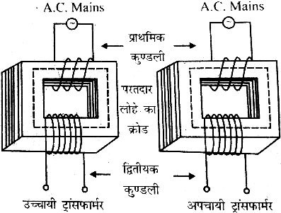
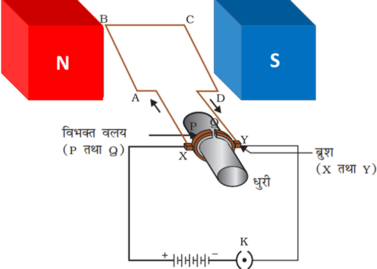

📘 4 (b) प्रत्यावर्ती धारा
प्रश्न दिष्ट धारा किसे कहते है?
वह धारा जो समय के साथ अपने परिमाण और दिशा को स्थिर बनाए रखती है, उसे दिष्ट धारा कहते हैं। यह धारा हमेशा एक ही दिशा में बहती है।
उदाहरण – बैटरी, सेल, डी.सी. जनरेटर से प्राप्त धारा।

उदाहरण – बैटरी, सेल, डी.सी. जनरेटर से प्राप्त धारा।
प्रश्न प्रत्यावर्ती धारा किसे कहते है?
वह धारा जो समय के साथ-साथ अपने परिमाण तथा दिशा दोनों को लगातार बदलती रहती है, उसे प्रत्यावर्ती धारा कहते हैं। यह साइन तरंग के रूप में प्रवाहित होती है। इसे निम्न समीकरण से प्रदर्शित करते हैं।
I = IoSinwt
उदाहरण – हमारे घरों में उपयोग होने वाली विद्युत धारा (220 V, 50 Hz)।

I = IoSinwt
उदाहरण – हमारे घरों में उपयोग होने वाली विद्युत धारा (220 V, 50 Hz)।
प्रश्न प्रत्यावर्ती धारा के तात्क्षणिक मान शिखर मान तथा वर्ग माध्य मूल किसे कहते है?
तात्क्षणिक मान - प्रत्यावर्ती धारा का तात्क्षणिक मान वह मान होता है, जो धारा का किसी विशेष क्षण पर होता है। एक पूर्ण चक्र में इसका मान शून्य होता है। इसका मान निम्न होता है।
I = IoSinwt
शिखर मान- प्रत्यावर्ती धारा के अधिकतम मान को उसका आयाम या शिखर मान कहते हैं। इसे Io प्रदर्शित करते है।
Io= √2 Irms
वर्ग माध्य मूल मान - प्रत्यावर्ती धारा के एक पूर्ण चक्र में धारा के तात्क्षणिक मानों के वर्गों के मध्यमान के वर्गमूल को प्रत्यावर्ती धारा का वर्ग माध्य मूल मान कहते हैं। इसे प्रत्यावर्ती धारा का आभासी मान भी कहते हैं। इसे Irms प्रदर्शित करते है।
I = IoSinwt
शिखर मान- प्रत्यावर्ती धारा के अधिकतम मान को उसका आयाम या शिखर मान कहते हैं। इसे Io प्रदर्शित करते है।
Io= √2 Irms
वर्ग माध्य मूल मान - प्रत्यावर्ती धारा के एक पूर्ण चक्र में धारा के तात्क्षणिक मानों के वर्गों के मध्यमान के वर्गमूल को प्रत्यावर्ती धारा का वर्ग माध्य मूल मान कहते हैं। इसे प्रत्यावर्ती धारा का आभासी मान भी कहते हैं। इसे Irms प्रदर्शित करते है।
प्रश्न प्रत्यावर्ती धारा तथा दिष्ट धारा मे अंतर लिखिए।
दिष्ट धारा (DC)
प्रत्यावर्ती धारा (AC)
मान परिवर्तित हो सकता है, किंतु दिशा निश्चित रहती है।
दिशा तथा परिमाण परिवर्तित होते रहते हैं।
ट्रांसफार्मर प्रयुक्त नहीं कर सकते।
इसमें ट्रांसफार्मर प्रयुक्त किया जा सकता है।
विद्युत चुंबक बनाने में उपयोगी नहीं है।
विद्युत धारा को विद्युत चुंबक बनाने में प्रयुक्त किया जा सकता है।
इसके मापक यंत्र चुंबकीय प्रभाव पर आधारित होते हैं।
इसके मापक यंत्र ऊष्मीय प्रभाव पर आधारित होते हैं।
अपेक्षाकृत कम खतरनाक है।
खतरनाक है।
Sample paper 2026
प्रत्यावर्ती धारा (AC)
मान परिवर्तित हो सकता है, किंतु दिशा निश्चित रहती है।
दिशा तथा परिमाण परिवर्तित होते रहते हैं।
ट्रांसफार्मर प्रयुक्त नहीं कर सकते।
इसमें ट्रांसफार्मर प्रयुक्त किया जा सकता है।
विद्युत चुंबक बनाने में उपयोगी नहीं है।
विद्युत धारा को विद्युत चुंबक बनाने में प्रयुक्त किया जा सकता है।
इसके मापक यंत्र चुंबकीय प्रभाव पर आधारित होते हैं।
इसके मापक यंत्र ऊष्मीय प्रभाव पर आधारित होते हैं।
अपेक्षाकृत कम खतरनाक है।
खतरनाक है।
Sample paper 2026
प्रश्न प्रत्यावर्ती धारा के चुम्बकीय और रासायनिक प्रभाव शून्य क्यों होते हैं ?
आधे चक्र में विद्युत् धारा एक दिशा में तथा आधे चक्र में विपरीत दिशा में प्रवाहित होती है जिससे पूर्ण चक्र में धारा का औसत मान शून्य होता है। अतः प्रत्यावर्ती धारा के चुम्बकीय और रासायनिक प्रभाव शून्य होते हैं।
प्रश्न प्रत्यावर्ती धारा का मापन चल कुण्डली धारामापी से नहीं किया जा सकता है, क्यों ?
प्रत्यावर्ती धारा का एक पूर्ण चक्र में औसत मान शून्य होता है। अतः प्रत्यावर्ती धारा चुम्बकीय प्रभाव प्रदर्शित नहीं करती। जबकि चल कुण्डली धारामापी धारा के चुम्बकीय प्रभाव पर आधारित है। फलस्वरूप चल कुण्डली धारामापी की सहायता से प्रत्यावर्ती धारा का मापन नहीं किया जा सकता।
प्रश्न प्रत्यावर्ती धारा (AC) को मापने वाले यंत्र किस सिद्धांतों पर आधारित होते हैं?
प्रत्यावर्ती धारा (AC) को मापने वाले यंत्र मुख्यतः धारा के ऊष्मीय (तापीय) सिद्धांत पर काम करते हैं।
प्रश्न प्रत्यावर्ती धारा के वर्ग माध्य मूल मान और शिखर मान में संबंध स्थापित कीजिए।
अथवा
सिद्ध कीजिए कि धारा का वर्ग माध्य मूल मान उसके शिखर मान का 1/ √2 गुना होता है।
माना किसी क्षण पर प्रत्यावर्ती धारा I = I₀ sin ωt है।
अतः प्रत्यावर्ती धारा का वर्ग माध्य मूल मान -
I²rms = (1/T) ∫₀ᵀ I² dt
I²rms = (1/T) ∫₀ᵀ (I₀ sin ωt)² dt
I²rms = (I₀²/T) ∫₀ᵀ sin² ωt dt
I²rms = (I₀²/2T) ∫₀ᵀ (1 - cos 2ωt) dt
I²rms = (I₀²/2T) [ t - (sin 2ωt)/(2ω) ]₀ᵀ
I²rms = (I₀²/2T) [ (T - (sin 2ωT)/(2ω)) - (0 - sin 0 / (2ω)) ]
I²rms = (I₀²/2T) [ T - (sin 2ω (2π/ω))/(2ω) ]
I²rms = (I₀²/2T) [ T - (sin 4π)/(2ω) ]
I²rms = (I₀²/2T) [T - 0]
I²rms = I₀²/2
Irms = I₀/√2
सिद्ध कीजिए कि धारा का वर्ग माध्य मूल मान उसके शिखर मान का 1/ √2 गुना होता है।
माना किसी क्षण पर प्रत्यावर्ती धारा I = I₀ sin ωt है।
अतः प्रत्यावर्ती धारा का वर्ग माध्य मूल मान -
I²rms = (1/T) ∫₀ᵀ I² dt
I²rms = (1/T) ∫₀ᵀ (I₀ sin ωt)² dt
I²rms = (I₀²/T) ∫₀ᵀ sin² ωt dt
I²rms = (I₀²/2T) ∫₀ᵀ (1 - cos 2ωt) dt
I²rms = (I₀²/2T) [ t - (sin 2ωt)/(2ω) ]₀ᵀ
I²rms = (I₀²/2T) [ (T - (sin 2ωT)/(2ω)) - (0 - sin 0 / (2ω)) ]
I²rms = (I₀²/2T) [ T - (sin 2ω (2π/ω))/(2ω) ]
I²rms = (I₀²/2T) [ T - (sin 4π)/(2ω) ]
I²rms = (I₀²/2T) [T - 0]
I²rms = I₀²/2
Irms = I₀/√2
प्रश्न प्रत्यावर्ती धारा दिष्ट धारा से अधिक खतरनाक क्यों होती है? 2025
अथवा
समान विभव की प्रत्यावर्ती धारा और दिष्ट धारा में से कौन अधिक सुरक्षित है और क्यों?
प्रत्यावर्ती धारा में विभवान्तर लगातार बदलता रहता है। इसका आभासी (rms) मान आमतौर पर 220 वोल्ट होता है।
अतः इसका वास्तविक अधिकतम मान अर्थात शिखर मान
Io= √2 Irms
Io= 1.41 (300)
Io= 331 वोल्ट
यानी 220 वोल्ट की AC धारा का वोल्टेज वास्तव में +311 से -311 वोल्ट तक बदलता रहता है।
जबकि दिष्ट धारा में वोल्टेज हमेशा स्थिर रहता है। यदि DC वोल्टेज 220 वोल्ट है, तो यह हमेशा 220 वोल्ट ही रहेगा।
इस प्रकार प्रत्यावर्ती धारा दिष्ट धारा से अधिक खतरनाक होती है।
अतः इसका वास्तविक अधिकतम मान अर्थात शिखर मान
Io= √2 Irms
Io= 1.41 (300)
Io= 331 वोल्ट
यानी 220 वोल्ट की AC धारा का वोल्टेज वास्तव में +311 से -311 वोल्ट तक बदलता रहता है।
जबकि दिष्ट धारा में वोल्टेज हमेशा स्थिर रहता है। यदि DC वोल्टेज 220 वोल्ट है, तो यह हमेशा 220 वोल्ट ही रहेगा।
इस प्रकार प्रत्यावर्ती धारा दिष्ट धारा से अधिक खतरनाक होती है।
प्रश्न प्रत्यावर्ती वि. वा. बल का शिखर से शिखर तक का मान कितना होता है ?
धनात्मक शिखर मान और ऋणात्मक शिखर मान के परिणाम के योग के मान के बराबर होता है
अर्थात् वि.वा. बल का शिखर से शिखर तक का मान = 2E = 2√20
अर्थात् वि.वा. बल का शिखर से शिखर तक का मान = 2E = 2√20
प्रश्न प्रतिरोध, प्रतिघात और प्रतिबाधा क्या है ? समझाइए।
प्रतिरोध - किसी चालक द्वारा विद्युत धारा के मार्ग में डाले गए अवरोध को प्रतिरोध कहते हैं। इसे R से प्रदर्शित करते हैं।
प्रतिघात - प्रत्यावर्ती धारा परिपथ में केवल प्रेरक कुण्डली अथवा केवल संधारित्र के द्वारा प्रत्यावर्ती धारा के मार्ग में उत्पन्न अवरोध को प्रतिघात कहते हैं। इसे X से प्रदर्शित करते हैं।
प्रतिबाधा - प्रत्यावर्ती परिपथ में ओमीय प्रतिरोध, प्रेरक कुण्डली और संधारित्र में से दो या दो से अधिक अवयवों के द्वारा डाले गये अवरोध को प्रतिबाधा कहते हैं। इसे Z से प्रदर्शित करते हैं।
प्रतिरोध
प्रतिघात
प्रतिबाधा
विद्युत धारा के मार्ग में डाले गए अवरोध को प्रतिरोध कहते हैं।
प्रत्यावर्ती धारा परिपथ में प्रेरक कुंडली तथा संधारित्र द्वारा धारा के मार्ग में दिए गए विरोध को प्रतिघात कहते हैं।
प्रत्यावर्ती धारा परिपथ में ओमीय प्रतिरोध, प्रेरक कुंडली और संधारित्र सभी के संयुक्त विरोध को प्रतिबाधा कहते हैं।
यह आवृत्ति पर निर्भर नहीं करता।
यह आवृत्ति पर निर्भर करता है।
यह आवृत्ति पर निर्भर करता है।
इसे R से प्रदर्शित करते हैं।
इसे X से प्रदर्शित करते हैं।
इसे Z से प्रदर्शित करते हैं।
प्रतिघात - प्रत्यावर्ती धारा परिपथ में केवल प्रेरक कुण्डली अथवा केवल संधारित्र के द्वारा प्रत्यावर्ती धारा के मार्ग में उत्पन्न अवरोध को प्रतिघात कहते हैं। इसे X से प्रदर्शित करते हैं।
प्रतिबाधा - प्रत्यावर्ती परिपथ में ओमीय प्रतिरोध, प्रेरक कुण्डली और संधारित्र में से दो या दो से अधिक अवयवों के द्वारा डाले गये अवरोध को प्रतिबाधा कहते हैं। इसे Z से प्रदर्शित करते हैं।
प्रतिरोध
प्रतिघात
प्रतिबाधा
विद्युत धारा के मार्ग में डाले गए अवरोध को प्रतिरोध कहते हैं।
प्रत्यावर्ती धारा परिपथ में प्रेरक कुंडली तथा संधारित्र द्वारा धारा के मार्ग में दिए गए विरोध को प्रतिघात कहते हैं।
प्रत्यावर्ती धारा परिपथ में ओमीय प्रतिरोध, प्रेरक कुंडली और संधारित्र सभी के संयुक्त विरोध को प्रतिबाधा कहते हैं।
यह आवृत्ति पर निर्भर नहीं करता।
यह आवृत्ति पर निर्भर करता है।
यह आवृत्ति पर निर्भर करता है।
इसे R से प्रदर्शित करते हैं।
इसे X से प्रदर्शित करते हैं।
इसे Z से प्रदर्शित करते हैं।
प्रश्न संधारित्र दिष्ट धारा को रोकता है तथा उच्च आवृत्ति की प्रत्यावर्ती धारा को गुजारता है क्यों? Sample paper 2026
दिष्ट धारा हमेशा एक ही दिशा में बहती है, इसलिए इसकी आवृत्ति शून्य (f = 0)) होती है जिससे इसका Xc का मान अनंत हो जाता है। अतः संधारित्र दिष्ट धारा को रोकता है।
इसके विपरीत प्रत्यावर्ती धारा की आवृत्ति (f) अधिक होती है, जिससे इसका Xc का मान बहुत कम हो जाता है। अतः प्रत्यावर्ती धारा संधारित्र से आसानी से गुजर जाती है।
इसके विपरीत प्रत्यावर्ती धारा की आवृत्ति (f) अधिक होती है, जिससे इसका Xc का मान बहुत कम हो जाता है। अतः प्रत्यावर्ती धारा संधारित्र से आसानी से गुजर जाती है।
प्रश्न दिष्ट धारा परिपथ में L प्रेरकत्व वाली कुण्डली का प्रतिरोधी कितना होता है ?
दिष्ट धारा के लिए आवृति v = 0
परिपथ में कुण्डली का प्रतिरोध अर्थात् प्रेरण प्रतिघात
Xc = ωL
Xc = 2πvL
Xc = 0
परिपथ में कुण्डली का प्रतिरोध अर्थात् प्रेरण प्रतिघात
Xc = ωL
Xc = 2πvL
Xc = 0
प्रश्न एक प्रत्यावर्ती धारा परिपथ में केवल एक ओमीय प्रतिरोध संयोजित है। धारा के लिए व्यंजक ज्ञात कीजिए तथा धारा व वोल्टता के बीच कलांतर ज्ञात कीजिए।

माना किसी क्षण प्रतिरोध R के सिरों पर प्रत्यावर्ती वोल्टता का समीकरण निम्न है-
V=Vo Sinωt …...(1)
यदि उसी क्षण प्रतिरोध R में बहने वाली धारा का मान I हो, तो ओम के नियम I =V/R से
I = (Vo Sinωt)/R
I = (Vo/R ) Sinωt
I=Io Sinωt ……..….(2)
जहाँ Io = Vo /R = प्रत्यावर्ती धारा का शिखर मान है।
परिपथ का प्रभावी प्रतिरोध -
R = Vo /Io
कलांतर - समी. (1) व (2) से स्पष्ट है, कि प्रत्यावर्ती वोल्टता व धारा दोनों समान कला में है।

प्रश्न एक प्रत्यावर्ती धारा परिपथ में केवल एक प्रेरकत्व संयोजित है। धारा के लिए व्यंजक ज्ञात कीजिए। परिपथ का प्रतिघात तथा धारा व वोल्टता के बीच कलांतर ज्ञात कीजिए।

माना किसी क्षण प्रेरकत्व L के सिरों पर प्रत्यावर्ती वोल्टता का समीकरण निम्न है-
V=Vo Sinωt …...(1)
यदि उसी क्षण संधारित्र C की प्लेटो पर आवेश का मान Q हो, तो
Q = CV
Q = C (Vo Sinωt)
Q = (CVo) Sinωt
अतः परिपथ में प्रवाहित धारा का मान
I = dQ/dt
I = d (CVo Sinωt)/dt
I =CVo d( Sinωt)/dt
I =CVo (w Cosωt )
I = (wCVo Sin (ωt + π\2)
I = Io Sin (ωt + π\2) —---(2)
जहाँ Io = wCVo = प्रत्यावर्ती धारा का शिखर मान है।
प्रतिघात - परिपथ का प्रभावी प्रतिरोध
Xc = Vo /Io
Xc = Vo /(ωCVo)
Xc = 1 /(ωC)
कलांतर - समी. (1) व (2) से स्पष्ट है, कि धारा, प्रत्यावर्ती विभावांतर से (π\2) कला में पीछे होती है।

प्रश्न एक प्रत्यावर्ती धारा परिपथ में केवल एक संधारित्र संयोजित है। धारा के लिए व्यंजक ज्ञात कीजिए। परिपथ का प्रतिघात तथा धारा व वोल्टता के बीच कलांतर ज्ञात कीजिए।

माना किसी क्षण संधारित्र C के सिरों पर प्रत्यावर्ती वोल्टता का समीकरण निम्न है-
V=Vo Sinωt …...(1)
यदि उसी क्षण संधारित्र C की प्लेटो पर आवेश का मान Q हो, तो
Q = CV
Q = C (Vo Sinωt)
Q = (CVo) Sinωt
अतः परिपथ में प्रवाहित धारा का मान
I = dQ/dt
I = d (CVo Sinωt)/dt
I =CVo d( Sinωt)/dt
I =CVo (w Cosωt )
I = (wCVo Sin (ωt + π\2)
I = Io Sin (ωt + π\2) —---(2)
जहाँ Io = ωCVo = प्रत्यावर्ती धारा का शिखर मान है।
प्रतिघात - परिपथ का प्रभावी प्रतिरोध
Xc = Vo /Io
Xc = Vo /(ωCVo)
Xc = 1 /(ωC)
कलांतर - समी. (1) व (2) से स्पष्ट है, कि धारा, प्रत्यावर्ती विभावांतर से (π\2) कला में अप्रगामी होती है।


प्रश्न एक RC प्रत्यावर्ती धारा परिपथ में प्रतिघात, कलांतर तथा धारा के लिए व्यंजक ज्ञात कीजिए।

माना RC परिपथ में किसी समय विभवांतर निम्न है.
V=Vo Sinωt …...(1)
प्रतिरोध R के सिरों पर विभवांतर VR = I R
संधारित्र C के सिरों पर विभवांतर VC = I Xc
कला कीजिए, तथा धारा व विभवांतर के मध्य ग्राफ खींचिए.
माना RC परिपथ में किसी समय
विभवांतर निम्न है.
V = V₀ Sinωt ------(1)
प्रतिरोध R के सिरों पर विभवांतर VR= IR
संधारित्र C के सिरों पर विभवांतर VC = IXc
हम जानते हैं की

यदि VR और Vc का परिणामी विभवांतर V हो तो PGT से
V² = VR² + Vc²
V² = (IR)² + (IXc)²
V² = I²R² + I²X2c
V² = I²(R² + X2c)
V²/I² = (R² + X2c)
V/I = √(R² + X2c)
प्रतिबाधा - परिपथ का प्रभावी प्रतिरोध प्रतिबाधा कहलाता हैं। इसे ZRc प्रदर्शित करते हैं।
ZRc = V/I
ZRc = √(R² + X2c)
कलांतर- कलांतर (θ) प्रत्यावर्ती धारा परिपथ में वोल्टेज और धारा के बीच का कोण है।
समकोण त्रिभूज में
tanθ = लंब/आधार
tanθ = Vc/VR
tanθ = IXc/IR
tanθ = Xc/R
θ = tan⁻¹(Xc/R)
अतः परिपथ में प्रवाहित धारा निम्न होगी।
I = Io Sin (ωt + θ)
जहाँ Io = Vo/ ZRc = प्रत्यावर्ती धारा का शिखर मान है।
प्रश्न एक RL प्रत्यावर्ती धारा परिपथ में प्रतिघात, कलांतर तथा धारा के लिए व्यंजक ज्ञात कीजिए।

माना RL परिपथ में किसी समय
विभवांतर निम्न है.
V = V₀ Sinωt ------(1)
प्रतिरोध R के सिरों पर विभवांतर VR = IR
संधारित्र L के सिरों पर विभवांतर VL = IXL
हम जानते हैं की

यदि VR और VL का परिणामी विभवांतर V हो तो PGT से
V² = VR² + VL²
V² = (IR)² + (IXL)²
V² = I²R² + I² X2L
V² = I²(R² + X2L)
V²/I² = (R² + X2L)
V /I = √(R² + X2L)
प्रतिबाधा - परिपथ का प्रभावी प्रतिरोध प्रतिबाधा कहलाता हैं। इसे ZRL प्रदर्शित करते हैं।
ZRL = V/I
ZRL = √(R² + X2L)
कलांतर- कलांतर (θ) प्रत्यावर्ती धारा परिपथ में वोल्टेज और धारा के बीच का कोण है।
समकोण त्रिभूज में
tanθ = लंब/आधार
tanθ = VL/VR
tanθ = (IXL)/IR
tanθ =XL/R
θ = tan⁻¹(XL/R)
अतः परिपथ में प्रवाहित धारा निम्न होगी।
I = Io Sin (ωt - θ)
जहाँ Io = Vo/ ZRL = प्रत्यावर्ती धारा का शिखर मान है।
प्रश्न एक LC प्रत्यावर्ती धारा परिपथ में प्रतिघात, कलांतर तथा धारा के लिए व्यंजक ज्ञात कीजिए।
माना LC परिपथ में किसी समय
विभवांतर निम्न है.
V = V₀ Sinωt ------(1)
संधारित्र L के सिरों पर विभवांतर VL = IXL
संधारित्र C के सिरों पर विभवांतर Vc = IXc
हम जानते हैं की

अतः यदि VL और Vc का परिणामी विभवांतर V हो तो PGT से
V = VR - VL
V = IXL - IXc
V = IXL - IXc
V = I(XL - Xc)
V/I = (XL - Xc)
प्रतिबाधा - परिपथ का प्रभावी प्रतिरोध प्रतिबाधा कहलाता हैं। इसे ZLc प्रदर्शित करते हैं।
ZLc = V/I
ZLc = (XL - Xc)
कलांतर- कलांतर (θ) प्रत्यावर्ती धारा परिपथ में वोल्टेज और धारा के बीच का कोण है।
θ = π/2
अतः परिपथ में प्रवाहित धारा निम्न होगी।
I = Io Sin (ωt + π/2)
जहाँ Io = Vo/ ZLc = प्रत्यावर्ती धारा का शिखर मान है।
विभवांतर निम्न है.
V = V₀ Sinωt ------(1)
संधारित्र L के सिरों पर विभवांतर VL = IXL
संधारित्र C के सिरों पर विभवांतर Vc = IXc
हम जानते हैं की
अतः यदि VL और Vc का परिणामी विभवांतर V हो तो PGT से
V = VR - VL
V = IXL - IXc
V = IXL - IXc
V = I(XL - Xc)
V/I = (XL - Xc)
प्रतिबाधा - परिपथ का प्रभावी प्रतिरोध प्रतिबाधा कहलाता हैं। इसे ZLc प्रदर्शित करते हैं।
ZLc = V/I
ZLc = (XL - Xc)
कलांतर- कलांतर (θ) प्रत्यावर्ती धारा परिपथ में वोल्टेज और धारा के बीच का कोण है।
θ = π/2
अतः परिपथ में प्रवाहित धारा निम्न होगी।
I = Io Sin (ωt + π/2)
जहाँ Io = Vo/ ZLc = प्रत्यावर्ती धारा का शिखर मान है।
प्रश्न अनुनाद किसे कहते हैं? LC प्रत्यावर्ती धारा परिपथ के लिए अनुनादी आवृत्ति ज्ञात कीजिए।
अनुनाद - जब किसी प्रत्यावर्ती धारा (AC) परिपथ की प्रेरक प्रतिघात XL और धारितीय प्रतिघात Xc का मान बराबर हो जाता है तो इसे अनुनाद कहते हैं।
अर्थात अनुनाद की स्थिति में
अनुनादी आवृत्ति - वह विशिष्ट आवृत्ति है जिस पर LC परिपथ में अनुनाद की घटना होती है, अनुनादी आवृत्ति कहलाती है। इसे fo से प्रदर्शित करते है।
अनुनाद की स्थिति में
ZLc = 0
XL - Xc = 0
XL = Xc
ωL = 1/(ωC)
ω2= 1/(LC)
ω = 1/(√LC)
2πfo = 1/(√LC)
fo = 1/(2π√LC)
अर्थात अनुनाद की स्थिति में
अनुनादी आवृत्ति - वह विशिष्ट आवृत्ति है जिस पर LC परिपथ में अनुनाद की घटना होती है, अनुनादी आवृत्ति कहलाती है। इसे fo से प्रदर्शित करते है।
अनुनाद की स्थिति में
ZLc = 0
XL - Xc = 0
XL = Xc
ωL = 1/(ωC)
ω2= 1/(LC)
ω = 1/(√LC)
2πfo = 1/(√LC)
fo = 1/(2π√LC)
प्रश्न Q गुणांक क्या है? इसके लिए सूत्र लिखिए तथा इसके मान को अधिक होने के लिए शर्तें लिखिए।
Q-गुणांक किसी अनुनादी परिपथ की गुणवत्ता का माप होता है। यह बताता है कि परिपथ में ऊर्जा हानि कितनी कम है और अनुनाद कितना तीक्ष्ण है।
Q-गुणांक का सूत्र
𝑄 = अनुनाद आवृत्ति /बैंड चौड़ाई
Q-गुणांक अधिक होने की शर्तें
VImp
Q-गुणांक का सूत्र
𝑄 = अनुनाद आवृत्ति /बैंड चौड़ाई
Q-गुणांक अधिक होने की शर्तें
VImp
प्रश्न एक LCR प्रत्यावर्ती धारा परिपथ में प्रतिघात, कलांतर तथा धारा के लिए व्यंजक ज्ञात कीजिए।
माना RL परिपथ में किसी समय
विभवांतर निम्न है.
V = V₀ Sinωt ------(1)
प्रतिरोध R के सिरों पर विभवांतर VR = IR
संधारित्र L के सिरों पर विभवांतर VL = IXL
हम जानते हैं की
अतः यदि VL और Vc का परिणामी विभवांतर (VL -Vc) होगा जिसकी दिशा वही होगी जो (VL) की दिशा होती है। अब यदि VR और (VL -Vc) का परिणामी विभवांतर V हो तो PGT से
V² = (VR)² + (VL -Vc)²
V² = (IR)² + (IXL- IXc )²
V² = I²R² + I²(XL- Xc )²
V² = I²[R² + (XL- Xc )²]
V²/I² = [R² + (XL- Xc )²]
V /I = √[R² + (XL- Xc )²]
प्रतिबाधा - परिपथ का प्रभावी प्रतिरोध प्रतिबाधा कहलाता हैं। इसे ZLCR प्रदर्शित करते हैं।
ZLCR= V/I
ZLCR = √[R² + (XL- Xc )²]
कलांतर- कलांतर (θ) प्रत्यावर्ती धारा परिपथ में वोल्टेज और धारा के बीच का कोण है।
समकोण त्रिभूज में
tanθ = लंब/आधार
tanθ = (VL -Vc)/VR
tanθ = (IXL- IXc )/IR
tanθ = I(XL- Xc )/IR
tanθ = (XL- Xc )/R
θ = tan⁻¹[(XL- Xc )/R]
अतः परिपथ में प्रवाहित धारा निम्न होगी।
I = Io Sin (ωt + θ)
जहाँ Io = Vo/ ZRL = प्रत्यावर्ती धारा का शिखर मान है।
प्रश्न 19. श्रेणी अनुनादी L-C-R परिपथ में प्रतिबाधा का मान कितना होगा ?
L-C-R परिपथ में प्रतिबाधा
ZLCR = √[R² + (XL- Xc )²]
अनुनादी स्थिति में
XL= Xc
अतः परिपथ की प्रतिबाधा
ZLCR = √[R² + (0)²]
ZLCR = √[R²]
ZLCR = R
अतः प्रतिबाधा, प्रतिरोध के बराबर होंगे।
2025
ZLCR = √[R² + (XL- Xc )²]
अनुनादी स्थिति में
XL= Xc
अतः परिपथ की प्रतिबाधा
ZLCR = √[R² + (0)²]
ZLCR = √[R²]
ZLCR = R
अतः प्रतिबाधा, प्रतिरोध के बराबर होंगे।
2025
प्रश्न प्रत्यावर्ती धारा परिपथ के लिए सिद्ध कीजिए कि Pav = Vrms Irms cos φ
माना किसी क्षण पर प्रत्यावर्ती विभावान्तर तथा प्रत्यावर्ती धारा निम्न है।
V = V₀ sin ωt
I = I₀ sin ωt
अतः एक पूर्ण चक्र के लिए औसत शक्ति
Pav = VI
Pav = [V₀sin ωt ][I₀sin (ωt - φ) ]
Pav = V₀I₀ sin ωt sin (ωt - φ)
Pav = V₀ I₀ sin ωt (sin ωt cos φ - cos ωt sin φ)
Pav = V₀ I₀ (sin² ωt cos φ - sin ωt cos ωt sin φ)
किंतु एक पूर्ण चक्र के लिए हम जानते हैं कि
sin² ωt = 1/2 और sin ωt = 0
अतः
Pav = V₀ I₀ [(½) cos φ - 0 x cos ωt sin φ]
Pav = V₀ I₀ [(½) cos φ ]
Pav =( V₀/√2)(I₀/√2)[cos φ ]
Pav = Vrms Irms cos φ
Pav = आभासी सामर्थ्य x शक्ति गुणांक
जहां
आभासी सामर्थ्य = Vrms Irms
शक्ति गुणांक = cos φ
V = V₀ sin ωt
I = I₀ sin ωt
अतः एक पूर्ण चक्र के लिए औसत शक्ति
Pav = VI
Pav = [V₀sin ωt ][I₀sin (ωt - φ) ]
Pav = V₀I₀ sin ωt sin (ωt - φ)
Pav = V₀ I₀ sin ωt (sin ωt cos φ - cos ωt sin φ)
Pav = V₀ I₀ (sin² ωt cos φ - sin ωt cos ωt sin φ)
किंतु एक पूर्ण चक्र के लिए हम जानते हैं कि
sin² ωt = 1/2 और sin ωt = 0
अतः
Pav = V₀ I₀ [(½) cos φ - 0 x cos ωt sin φ]
Pav = V₀ I₀ [(½) cos φ ]
Pav =( V₀/√2)(I₀/√2)[cos φ ]
Pav = Vrms Irms cos φ
Pav = आभासी सामर्थ्य x शक्ति गुणांक
जहां
आभासी सामर्थ्य = Vrms Irms
शक्ति गुणांक = cos φ
प्रश्न वाटहीन धारा का क्या अर्थ है ?
यदि किसी प्रत्यावर्ती धारा परिपथ में धारा तो बहती है, किन्तु औसत शक्ति व्यय का मान शून्य होता है, तो उस धारा को वाटहीन धारा कहते हैं।
प्रश्न किस दशा में धारा वाटहीन होती है?
प्रत्यावर्ती धारा परिपथ में शुद्ध प्रेरकत्व या शुद्ध धारिता होने पर धारा वाटहीन होती है, क्योंकि इस स्थिति में धारा और वोल्टेज के बीच π/ 2 का कलान्तर होता है। फलस्वरूप औसत शक्ति व्यय शून्य होता है।
Pav = Vrms Irms cos φ
Pav = Vrms Irms cos(π/ 2)
Pav = Vrms Irms 0
Pav = 0
Pav = Vrms Irms cos φ
Pav = Vrms Irms cos(π/ 2)
Pav = Vrms Irms 0
Pav = 0
प्रश्न चोक कुण्डली का सिद्धान्त क्या है? धारा नियन्त्रण हेतु इसके उपयोग को समझाइये।
सिद्धान्त- प्रत्यावर्ती धारा परिपथ में धारा के मान को नियन्त्रित करने के लिए अति निम्न प्रतिरोध तथा उच्च प्रेरकत्व की एक कुण्डली उपयोग में लाते हैं। इससे परिपथ में अति न्यून ऊर्जा क्षय होती है। इस कुण्डली को ही चोक कुण्डली कहते हैं।
यदि किसी प्रत्यावर्ती धारा परिपथ में केवल शुद्ध प्रेरकत्व हो तथा नर्म लोहे का क्रोड प्रतिरोध शून्य हो, तो विद्युत् वाहक बल और धारा में 90o का कलान्तर होता है। इस स्थिति में परिपथ की औसत शक्ति
P(av) = Vrms Irms cos φ
P(av) = Vrms Irms cos(π/ 2)
P(av) = Vrms Irms 0
P(av) = 0
अतः ऊर्जा का बिल्कुल अपव्यय नहीं होता, लेकिन व्यवहार में प्रतिरोध शून्य नहीं हो सकता। अतः विद्युत् ऊर्जा के कुछ भाग का ऊष्मीय ऊर्जा में अपव्यय होता रहता है।
सरंचना - चोक कुण्डली ताँबे के विद्युत्रोधी मोटे तार के अनेक फेरे नर्म लोहे के क्रोड पर लपेटकर बनायो जाती है।

उपयोग- प्रत्यावर्ती धारा परिपथ में चोक कुण्डली लगाकर प्रत्यावर्ती धारा के मान को नियन्त्रित किया जाता है। कुण्डली का प्रतिघात X L= wL अतः चोक कुण्डली का प्रेरकत्व अधिक है तो धारा का मान कम हो जाता है तथा यदि प्रेरकत्व कम है, तो धारा का मान बढ़ जाता है। इस प्रक्रिया में विद्युत् ऊर्जा का ऊष्मीय ऊर्जा में अपव्यय नगण्य होता है।
यदि किसी प्रत्यावर्ती धारा परिपथ में केवल शुद्ध प्रेरकत्व हो तथा नर्म लोहे का क्रोड प्रतिरोध शून्य हो, तो विद्युत् वाहक बल और धारा में 90o का कलान्तर होता है। इस स्थिति में परिपथ की औसत शक्ति
P(av) = Vrms Irms cos φ
P(av) = Vrms Irms cos(π/ 2)
P(av) = Vrms Irms 0
P(av) = 0
अतः ऊर्जा का बिल्कुल अपव्यय नहीं होता, लेकिन व्यवहार में प्रतिरोध शून्य नहीं हो सकता। अतः विद्युत् ऊर्जा के कुछ भाग का ऊष्मीय ऊर्जा में अपव्यय होता रहता है।
सरंचना - चोक कुण्डली ताँबे के विद्युत्रोधी मोटे तार के अनेक फेरे नर्म लोहे के क्रोड पर लपेटकर बनायो जाती है।
उपयोग- प्रत्यावर्ती धारा परिपथ में चोक कुण्डली लगाकर प्रत्यावर्ती धारा के मान को नियन्त्रित किया जाता है। कुण्डली का प्रतिघात X L= wL अतः चोक कुण्डली का प्रेरकत्व अधिक है तो धारा का मान कम हो जाता है तथा यदि प्रेरकत्व कम है, तो धारा का मान बढ़ जाता है। इस प्रक्रिया में विद्युत् ऊर्जा का ऊष्मीय ऊर्जा में अपव्यय नगण्य होता है।
प्रश्न चोक कुण्डली में बहने वाली धारा को वाटहीन धारा क्यों कहते हैं ?(2018)
चोक कुण्डली ताँबे के तार की बनी होती नगण्य होता है। पुनः धारा और वोल्टेज के बीच π / 2 का कलान्तर होने के कारण औसत शक्ति व्यय शून्य होती है। अतः चोक कुण्डली में बहने वाली धारा वाटहीन धारा होती है।
प्रश्न प्रत्यावर्ती धारा का मान घटाने के लिए प्रतिरोध की अपेक्षा प्रेरकत्व अधिक उपयुक्त क्यों है ?
प्रत्यावर्ती धारा के मान को घटाने के लिए प्रतिरोध का उपयोग करने पर विद्युत् ऊर्जा के कुछ भाग का ऊष्मीय ऊर्जा में अपव्यय हो जाता है जबकि प्रेरकत्व का उपयोग करने पर प्रेरकत्व का शक्ति गुणांक शून्य होने के कारण ऊर्जा का बिल्कुल अपव्यय नहीं होता।
प्रश्न ट्रांसफॉर्मर किसे कहते हैं? ट्रान्सफॉर्मर के प्रकार रचना, सिद्धान्त तथा कार्यविधि समझाइये। 2021/23/ sample paper 2026
ट्रांसफॉर्मर वह उपकरण है जो प्रत्यावर्ती विभावांतर को बढ़ाने या घटाने का कार्य करता है, परंतु इसकी आवृत्ति तथा शक्ति समान रहती है।
प्रकार - यह दो प्रकार का होता है।
उदाहरण – पावर स्टेशन में वोल्टता को बहुत अधिक (11 kV → 220 kV) करने के लिए।
उदाहरण – 220 V AC को 12 V या 6 V में बदलना (घरेलू उपकरणों में उपयोग)।
ट्रांसफॉर्मर की रचना -ट्रान्सफॉर्मर के मुख्य तीन भाग होते हैं।
2023 /26
सिद्धांत - ट्रांसफॉर्मर विद्युतचुंबकीय प्रेरण के सिद्धांत पर कार्य करता है।
जब प्राथमिक कुण्डली में प्रत्यावर्ती धारा प्रवाहित होती है, तो क्रोड में बदलता हुआ चुंबकीय फ्लक्स उत्पन्न होता है। यह फ्लक्स द्वितीयक कुण्डली से होकर गुजरता है और उसमें विद्युत वाहक बल (emf) प्रेरित करता है।
2021/23/ Sample paper 2026
कार्य विधि एवं सूत्र स्थापना - माना की प्राथमिक एवं द्वितीयक कुण्डलियों में फेरों की संख्या क्रमशः एनपी और एनएस हैं। यदि किसी क्षण प्राथमिक कुण्डली से बद्ध चुम्बकीय फ्लक्स हो, तो उसमें प्रेरित वि. वा. बल
ep = -Np dϕ/dt ...(1)
यदि चुम्बकीय फ्लक्स में क्षरण न हो रहा हो, तो द्वितीयक कुण्डली से बद्ध चुम्बकीय फ्लक्स भी होगा। अतः द्वितीयक कुण्डली में प्रेरित वि. वा. बल
es = -Ns dϕ/dt ...(2)
समीकरण (1) मे (2) का भाग देने पर-
es /ep = Ns/ Np ...(3)
साथ ही हम जानते है कि एक आदर्श ट्रांसफार्मर के लिए
इनपुट पावर = आउट पुट पावर
es Is = ep Ip
es /ep = Ip /Is ...(4)
समीकरण (3) मे (4) से -
es /ep = Ns/ Np= Ip /Is = r
जहां r परिणमन गुणांक है।
यही ट्रांसफार्मर का सिद्धांत है।
2023/26
ट्रांसफॉर्मर में ऊर्जा क्षय - यद्यपि ट्रांसफॉर्मर की दक्षता बहुत अधिक होती है (95%–99%), फिर भी इसमें कुछ ऊर्जा हानि होती है। इन हानियों को मिलाकर ऊर्जा क्षय कहा जाता है।
1. ताँबे की हानि - प्राथमिक तथा द्वितीयक कुण्डलियों के ताँबे के तारों में प्रतिरोध के कारण धारा प्रवाहित होने पर ऊष्मा उत्पन्न होती है।
यह हानि I²R Loss कहलाती है।
2. लौह हानि - लौह क्रोड में प्रत्यावर्ती फ्लक्स के कारण यह हानि होती है। इसके दो प्रकार हैं –
(i) हिस्टैरिसिस हानि – लौह क्रोड में चुंबकीय अणुओं के बार-बार पुनर्विन्यास से।
(ii) भंवर धारा हानि – क्रोड में बदलते फ्लक्स से प्रेरित धारा के कारण ऊष्मा उत्पन्न होती है।
3. लीकेज फ्लक्स हानि - कुछ चुंबकीय फ्लक्स क्रोड के बाहर से गुजरता है और द्वितीयक कुण्डली को नहीं जोड़ पाता। इससे ट्रांसफॉर्मर की दक्षता घटती है।
ऊर्जा क्षय को कम करने के उपाय
प्रकार - यह दो प्रकार का होता है।
उदाहरण – पावर स्टेशन में वोल्टता को बहुत अधिक (11 kV → 220 kV) करने के लिए।
उदाहरण – 220 V AC को 12 V या 6 V में बदलना (घरेलू उपकरणों में उपयोग)।

ट्रांसफॉर्मर की रचना -ट्रान्सफॉर्मर के मुख्य तीन भाग होते हैं।
2023 /26
सिद्धांत - ट्रांसफॉर्मर विद्युतचुंबकीय प्रेरण के सिद्धांत पर कार्य करता है।
जब प्राथमिक कुण्डली में प्रत्यावर्ती धारा प्रवाहित होती है, तो क्रोड में बदलता हुआ चुंबकीय फ्लक्स उत्पन्न होता है। यह फ्लक्स द्वितीयक कुण्डली से होकर गुजरता है और उसमें विद्युत वाहक बल (emf) प्रेरित करता है।
2021/23/ Sample paper 2026
कार्य विधि एवं सूत्र स्थापना - माना की प्राथमिक एवं द्वितीयक कुण्डलियों में फेरों की संख्या क्रमशः एनपी और एनएस हैं। यदि किसी क्षण प्राथमिक कुण्डली से बद्ध चुम्बकीय फ्लक्स हो, तो उसमें प्रेरित वि. वा. बल
ep = -Np dϕ/dt ...(1)
यदि चुम्बकीय फ्लक्स में क्षरण न हो रहा हो, तो द्वितीयक कुण्डली से बद्ध चुम्बकीय फ्लक्स भी होगा। अतः द्वितीयक कुण्डली में प्रेरित वि. वा. बल
es = -Ns dϕ/dt ...(2)
समीकरण (1) मे (2) का भाग देने पर-
es /ep = Ns/ Np ...(3)
साथ ही हम जानते है कि एक आदर्श ट्रांसफार्मर के लिए
इनपुट पावर = आउट पुट पावर
es Is = ep Ip
es /ep = Ip /Is ...(4)
समीकरण (3) मे (4) से -
es /ep = Ns/ Np= Ip /Is = r
जहां r परिणमन गुणांक है।
यही ट्रांसफार्मर का सिद्धांत है।
2023/26
ट्रांसफॉर्मर में ऊर्जा क्षय - यद्यपि ट्रांसफॉर्मर की दक्षता बहुत अधिक होती है (95%–99%), फिर भी इसमें कुछ ऊर्जा हानि होती है। इन हानियों को मिलाकर ऊर्जा क्षय कहा जाता है।
1. ताँबे की हानि - प्राथमिक तथा द्वितीयक कुण्डलियों के ताँबे के तारों में प्रतिरोध के कारण धारा प्रवाहित होने पर ऊष्मा उत्पन्न होती है।
यह हानि I²R Loss कहलाती है।
2. लौह हानि - लौह क्रोड में प्रत्यावर्ती फ्लक्स के कारण यह हानि होती है। इसके दो प्रकार हैं –
(i) हिस्टैरिसिस हानि – लौह क्रोड में चुंबकीय अणुओं के बार-बार पुनर्विन्यास से।
(ii) भंवर धारा हानि – क्रोड में बदलते फ्लक्स से प्रेरित धारा के कारण ऊष्मा उत्पन्न होती है।
3. लीकेज फ्लक्स हानि - कुछ चुंबकीय फ्लक्स क्रोड के बाहर से गुजरता है और द्वितीयक कुण्डली को नहीं जोड़ पाता। इससे ट्रांसफॉर्मर की दक्षता घटती है।
ऊर्जा क्षय को कम करने के उपाय
प्रश्न ट्रान्सफॉर्मर में भँवर धाराओं का प्रभाव किस प्रकार कम किया जाता है ?
अथवा
ट्रान्सफॉर्मर के क्रोड पटलित बनाये जाते हैं। क्यों ? 2025
ट्रान्सफॉर्मर के क्रोड को पटलित बनाकर भँवर धाराओं के प्रभाव को कम किया जाता है। क्रोड के पटलित होने से उसका प्रतिरोध बहुत अधिक हो जाता है। अतः उत्पन्न भँवर धाराओं की प्रबलता बहुत कम हो जाती है। इस प्रकार विद्युत् ऊर्जा का ऊष्मीय ऊर्जा में अपव्यय नहीं हो पाता।
ट्रान्सफॉर्मर के क्रोड पटलित बनाये जाते हैं। क्यों ? 2025
ट्रान्सफॉर्मर के क्रोड को पटलित बनाकर भँवर धाराओं के प्रभाव को कम किया जाता है। क्रोड के पटलित होने से उसका प्रतिरोध बहुत अधिक हो जाता है। अतः उत्पन्न भँवर धाराओं की प्रबलता बहुत कम हो जाती है। इस प्रकार विद्युत् ऊर्जा का ऊष्मीय ऊर्जा में अपव्यय नहीं हो पाता।
प्रश्न ट्रांसफॉर्मर के क्रोड पटलित कैसे बनाया जाता है?
ट्रांसफॉर्मर के क्रोड को एकसमान लोहे के टुकड़े की बजाय पतली- पतली लोहे की चादरों से बनाया जाता है।
नर्म लोहे की बनी कई आयताकार पट्टियाँ लेते हैं। इनके बीच का आयताकार भाग काटकर अलग कर दिया जाता है। इन पट्टियों को विद्युत्-रोधी पदार्थ की तह देकर तथा इन्हें जोड़कर आवश्यक मोटाई का बना लेते हैं। यह पटलित क्रोड कहलाता क्रोड है।
नर्म लोहे की बनी कई आयताकार पट्टियाँ लेते हैं। इनके बीच का आयताकार भाग काटकर अलग कर दिया जाता है। इन पट्टियों को विद्युत्-रोधी पदार्थ की तह देकर तथा इन्हें जोड़कर आवश्यक मोटाई का बना लेते हैं। यह पटलित क्रोड कहलाता क्रोड है।
प्रश्न ट्रांसफार्मर के उपयोग लिखिए।
ट्रांसफार्मर का उपयोग उन विद्युत उपकरणों में किया जाता है जो मुख्य आपूर्ति से प्राप्त वोल्टेज के अलावा किसी अन्य वोल्टेज पर संचालित होते हैं।
उच्चायी ट्रान्सफॉर्मर
अपचायी ट्रान्सफॉर्मर
यह प्रत्यावर्ती विभवान्तर को बढ़ा देता है।
यह प्रत्यावर्ती विभवान्तर को घटा देता है।
यह धारा की प्रबलता को घटा देता है।
यह धारा की प्रबलता को बढ़ा देता है।
इसकी द्वितीयक कुंडली में फेरों की संख्या प्राथमिक कुंडली से अधिक होती है।
इसकी द्वितीयक कुंडली में फेरों की संख्या प्राथमिक कुंडली से कम होती है।
इसका परिणमन अनुपात 1 से अधिक होता है।
इसका परिणमन अनुपात 1 से कम होता है।
2022
उच्चायी ट्रान्सफॉर्मर
अपचायी ट्रान्सफॉर्मर
यह प्रत्यावर्ती विभवान्तर को बढ़ा देता है।
यह प्रत्यावर्ती विभवान्तर को घटा देता है।
यह धारा की प्रबलता को घटा देता है।
यह धारा की प्रबलता को बढ़ा देता है।
इसकी द्वितीयक कुंडली में फेरों की संख्या प्राथमिक कुंडली से अधिक होती है।
इसकी द्वितीयक कुंडली में फेरों की संख्या प्राथमिक कुंडली से कम होती है।
इसका परिणमन अनुपात 1 से अधिक होता है।
इसका परिणमन अनुपात 1 से कम होता है।
2022
प्रश्न डायनेमो (जनरेटर) क्या हैं? इसका सिद्धांत लिखिए।
वह युक्ति जिसकी सहायता से यांत्रिक ऊर्जा को विद्युत ऊर्जा में परिवर्तित किया जाता है। डायनेमो कहलाता है।
डायनमो निम्न दो प्रकार का होता हैं।
सिद्धांत - डायनेमो विद्युत चुंबकीय प्रेरण के सिद्धांत पर कार्य करता है। जब किसी कुंडली से बद्ध चुंबकीय फ्लक्स में परिवर्तन होता है तो उस कुंडली में प्रेरित विद्युत वाहक बल उत्पन्न हो जाता है और यदि कुंडली बंद है तो उसमें प्रेरित धारा बहने लगती है।
डायनमो निम्न दो प्रकार का होता हैं।
सिद्धांत - डायनेमो विद्युत चुंबकीय प्रेरण के सिद्धांत पर कार्य करता है। जब किसी कुंडली से बद्ध चुंबकीय फ्लक्स में परिवर्तन होता है तो उस कुंडली में प्रेरित विद्युत वाहक बल उत्पन्न हो जाता है और यदि कुंडली बंद है तो उसमें प्रेरित धारा बहने लगती है।
प्रश्न AC डायनेमो किसे कहते हैं ? इसकी रचना तथा कार्य विधि लिखिए।
वह डायनेमो जो यांत्रिक कार्य को प्रत्यावर्ती धारा के रूप में विद्युत ऊर्जा में परिवर्तित करता है AC डायनेमो कहलाता है। इसका कार्य विद्युत चुम्बकीय प्रेरण पर आधारित है।
संरचना - AC डायनेमो में निम्नलिखित भाग होते हैं:

कार्यविधि,- जब आर्मेचर ABCD को चुंबकीय ध्रुवों N और S के बीच घुमाया जाता है तो यह चुंबकीय क्षेत्र रेखाओं को काटता है। इससे उसमें से गुजरने वाला चुंबकीय फ्लक्स बदलता है और उसी कारण उसमें प्रेरित धारा उत्पन्न हो जाती है। इस धारा की दिशा फ्लेमिंग के दाएँ हाथ के नियम से जानी जाती है।
मान लीजिए आर्मेचर वामावर्त दिशा में घूम रहा है और किसी क्षण उसकी भुजा AB ऊपर की ओर तथा CD नीचे की ओर जा रही है। तब धारा की दिशा DCBA होगी और बाह्य परिपथ में धारा B₁ से B2 की ओर प्रवाहित होगी।
आधे चक्र के बाद भुजाओं की स्थिति बदल जाती है। अब CD ऊपर की ओर और AB नीचे की ओर जाती है। इस समय धारा की दिशा ABCD होगी और बाह्य परिपथ में धारा B₂ से B₁ की ओर प्रवाहित होगी।
परिणामस्वरूप बाह्य परिपथ में जो धारा प्रवाहित होती है वह प्रत्यावर्ती धारा होती है, जिसे समीकरण I=I0sinωt द्वारा व्यक्त किया जाता है।
संरचना - AC डायनेमो में निम्नलिखित भाग होते हैं:
कार्यविधि,- जब आर्मेचर ABCD को चुंबकीय ध्रुवों N और S के बीच घुमाया जाता है तो यह चुंबकीय क्षेत्र रेखाओं को काटता है। इससे उसमें से गुजरने वाला चुंबकीय फ्लक्स बदलता है और उसी कारण उसमें प्रेरित धारा उत्पन्न हो जाती है। इस धारा की दिशा फ्लेमिंग के दाएँ हाथ के नियम से जानी जाती है।
मान लीजिए आर्मेचर वामावर्त दिशा में घूम रहा है और किसी क्षण उसकी भुजा AB ऊपर की ओर तथा CD नीचे की ओर जा रही है। तब धारा की दिशा DCBA होगी और बाह्य परिपथ में धारा B₁ से B2 की ओर प्रवाहित होगी।
आधे चक्र के बाद भुजाओं की स्थिति बदल जाती है। अब CD ऊपर की ओर और AB नीचे की ओर जाती है। इस समय धारा की दिशा ABCD होगी और बाह्य परिपथ में धारा B₂ से B₁ की ओर प्रवाहित होगी।
परिणामस्वरूप बाह्य परिपथ में जो धारा प्रवाहित होती है वह प्रत्यावर्ती धारा होती है, जिसे समीकरण I=I0sinωt द्वारा व्यक्त किया जाता है।
प्रश्न DC डायनेमो किसे कहते हैं ? इसकी रचना तथा कार्य विधि लिखिए।
वह डायनेमो जो यांत्रिक कार्य को दिष्ट धारा के रूप में विद्युत ऊर्जा में परिवर्तित करता है DC डायनेमो कहलाता है। इसका कार्य विद्युत चुम्बकीय प्रेरण पर आधारित है।

संरचना -DC डायनेमो में निम्नलिखित भाग होते हैं:
कार्यविधि,- जब आर्मेचर ABCD को चुंबकीय ध्रुवों N और S के बीच घुमाया जाता है तो यह चुंबकीय क्षेत्र रेखाओं को काटता है। इससे उसमें से गुजरने वाला चुंबकीय फ्लक्स बदलता है और उसी कारण उसमें प्रेरित धारा उत्पन्न हो जाती है। इस धारा की दिशा फ्लेमिंग के दाएँ हाथ के नियम से जानी जाती है।
मान लीजिए आर्मेचर वामावर्त दिशा में घूम रहा है और किसी क्षण उसकी भुजा AB ऊपर की ओर तथा CD नीचे की ओर जा रही है। तब धारा की दिशा DCBA होगी और बाह्य परिपथ में धारा B₁ से B2 की ओर प्रवाहित होगी।
आधे चक्र के बाद भुजाओं की स्थिति बदल जाती है। अब CD ऊपर की ओर और AB नीचे की ओर जाती है। इस समय धारा की दिशा ABCD होगी और बाह्य परिपथ में धारा B₁ से B₂ की ओर प्रवाहित होगी।
परिणामस्वरूप बाह्य परिपथ में जो धारा प्रवाहित होती है वह दिष्ट धारा होती है।
संरचना -DC डायनेमो में निम्नलिखित भाग होते हैं:
कार्यविधि,- जब आर्मेचर ABCD को चुंबकीय ध्रुवों N और S के बीच घुमाया जाता है तो यह चुंबकीय क्षेत्र रेखाओं को काटता है। इससे उसमें से गुजरने वाला चुंबकीय फ्लक्स बदलता है और उसी कारण उसमें प्रेरित धारा उत्पन्न हो जाती है। इस धारा की दिशा फ्लेमिंग के दाएँ हाथ के नियम से जानी जाती है।
मान लीजिए आर्मेचर वामावर्त दिशा में घूम रहा है और किसी क्षण उसकी भुजा AB ऊपर की ओर तथा CD नीचे की ओर जा रही है। तब धारा की दिशा DCBA होगी और बाह्य परिपथ में धारा B₁ से B2 की ओर प्रवाहित होगी।
आधे चक्र के बाद भुजाओं की स्थिति बदल जाती है। अब CD ऊपर की ओर और AB नीचे की ओर जाती है। इस समय धारा की दिशा ABCD होगी और बाह्य परिपथ में धारा B₁ से B₂ की ओर प्रवाहित होगी।
परिणामस्वरूप बाह्य परिपथ में जो धारा प्रवाहित होती है वह दिष्ट धारा होती है।
प्रश्न AC डायनेमो और DC डायनेमो में अंतर
क्र.सं.
AC डायनेमो (परिवर्ती धारा जनित्र)
DC डायनेमो (दिष्ट धारा जनित्र)
1.
यह परिवर्ती धारा (AC) उत्पन्न करता है।
यह दिष्ट धारा (DC) उत्पन्न करता है।
2.
इसमें स्लिप रिंग का उपयोग होता है।
इसमें अर्द्ध वलय का उपयोग होता है।
3.
धारा की दिशा समय-समय पर बदलती रहती है।
धारा की दिशा हमेशा एक ही रहती है।
4.
निर्माण सरल होता है।
निर्माण अपेक्षाकृत जटिल होता है।
5.
इसे बिजली घरों में बड़ी मात्रा में विद्युत उत्पादन हेतु प्रयोग किया जाता है।
इसे बैटरियों की चार्जिंग, विद्युत मोटरों आदि में प्रयोग किया जाता है।
AC डायनेमो (परिवर्ती धारा जनित्र)
DC डायनेमो (दिष्ट धारा जनित्र)
1.
यह परिवर्ती धारा (AC) उत्पन्न करता है।
यह दिष्ट धारा (DC) उत्पन्न करता है।
2.
इसमें स्लिप रिंग का उपयोग होता है।
इसमें अर्द्ध वलय का उपयोग होता है।
3.
धारा की दिशा समय-समय पर बदलती रहती है।
धारा की दिशा हमेशा एक ही रहती है।
4.
निर्माण सरल होता है।
निर्माण अपेक्षाकृत जटिल होता है।
5.
इसे बिजली घरों में बड़ी मात्रा में विद्युत उत्पादन हेतु प्रयोग किया जाता है।
इसे बैटरियों की चार्जिंग, विद्युत मोटरों आदि में प्रयोग किया जाता है।
प्रश्न – DC मोटर किसे कहते हैं ? इसकी रचना तथा कार्यविधि लिखिए।
वह यंत्र जो विद्युत ऊर्जा को यांत्रिक ऊर्जा में परिवर्तित करता है, DC मोटर (दिष्ट धारा मोटर) कहलाता है।
यह विद्युत चुम्बकीय बल के सिद्धांत पर आधारित है।
संरचना –DC मोटर के मुख्य भाग निम्नलिखित हैं –
कार्यविधि - जब DC मोटर के आर्मेचर में दिष्ट धारा प्रवाहित की जाती है, तब चुंबकीय क्षेत्र और आर्मेचर के प्रत्येक भुजा में प्रवाहित धारा के बीच लॉरेंज बल उत्पन्न होता है।
बाएँ और दाएँ भुजाओं पर लगने वाले बल विपरीत दिशाओं में होते हैं, जिससे आर्मेचर घूमने लगता है। प्रत्येक आधे चक्र के बाद अर्द्ध वलय धारा की दिशा बदल देता है ताकि आर्मेचर सदैव एक ही दिशा में घूमता रहे। इस प्रकार विद्युत ऊर्जा यांत्रिक घूर्णन ऊर्जा में बदल जाती है।
यह विद्युत चुम्बकीय बल के सिद्धांत पर आधारित है।

संरचना –DC मोटर के मुख्य भाग निम्नलिखित हैं –
कार्यविधि - जब DC मोटर के आर्मेचर में दिष्ट धारा प्रवाहित की जाती है, तब चुंबकीय क्षेत्र और आर्मेचर के प्रत्येक भुजा में प्रवाहित धारा के बीच लॉरेंज बल उत्पन्न होता है।
बाएँ और दाएँ भुजाओं पर लगने वाले बल विपरीत दिशाओं में होते हैं, जिससे आर्मेचर घूमने लगता है। प्रत्येक आधे चक्र के बाद अर्द्ध वलय धारा की दिशा बदल देता है ताकि आर्मेचर सदैव एक ही दिशा में घूमता रहे। इस प्रकार विद्युत ऊर्जा यांत्रिक घूर्णन ऊर्जा में बदल जाती है।
प्रश्न DC डायनेमो और DC मोटर में अंतर लिखिए।
क्र.सं.
DC डायनेमो (विद्युत जनित्र)
DC मोटर (विद्युत मोटर)
1.
यह यांत्रिक ऊर्जा को विद्युत ऊर्जा में परिवर्तित करता है।
यह विद्युत ऊर्जा को यांत्रिक ऊर्जा में परिवर्तित करती है।
2.
इसका कार्य सिद्धांत विद्युत चुंबकीय प्रेरण पर आधारित है।
इसका कार्य सिद्धांत चुंबकीय बल पर आधारित है।
3.
इसमें आर्मेचर को बाहरी यांत्रिक बल से घुमाया जाता है।
इसमें आर्मेचर धारा प्रवाह के कारण स्वयं घूमता है।
4.
यह धारा उत्पन्न करता है।
यह कार्य करती है या घूर्णन उत्पन्न करती है।
5.
इसका उपयोग बिजली उत्पादन के लिए किया जाता है।
इसका उपयोग पंखों, खिलौनों, मशीनों आदि को चलाने के लिए किया जाता है।
15 बहुविकल्पीय प्रश्न (MCQs)
उत्तर: 50 हर्ट्ज
उत्तर: हर्ट्ज (Hz)
उत्तर: एक पूर्ण चक्र के लिए
उत्तर: ए.सी. एमीटर
उत्तर: इन्वर्टर
उत्तर: अधिकतम मान का 1/√2 गुणा
उत्तर: 𝑃 = 𝑉rms𝐼rmscos𝜙
उत्तर: 0 से 1 के बीच
उत्तर: अनुनाद (Resonance)
उत्तर: 90°
उत्तर: 90°
उत्तर: जब φ = 0° (धारा और विभवान्तर समान फेज में हों)
उत्तर: 𝐸 = 𝐸osin𝜔𝑡
उत्तर: विद्युत चुंबकीय प्रेरण के सिद्धांत पर
उत्तर: प्रत्येक चक्र में दो बार
रिक्त स्थान भरिए
उत्तर: दिशा और परिमाण
उत्तर: चक्र
उत्तर: 1/√2
उत्तर: शून्य
उत्तर: विद्युत चुंबकीय प्रेरण
सही जोड़ियाँ
A B
1. प्रेरक कुंडली (c) धारा विभवान्तर से 90° पीछे रहती है
2. धारित्र। (a) धारा विभवान्तर से 90° आगे रहती है
3. अनुनाद स्थिति (d) प्रेरक एवं धारित्र रिएक्टेंस समान
4. पावर फैक्टर (b) cosφ
5. ट्रांसफॉर्मर (e) प्रत्यावर्ती वोल्टेज बढ़ाने या घटाने हेतु
सही उत्तर क्रम: 1-c, 2-a, 3-d, 4-b, 5-e
सही या गलत
DC डायनेमो (विद्युत जनित्र)
DC मोटर (विद्युत मोटर)
1.
यह यांत्रिक ऊर्जा को विद्युत ऊर्जा में परिवर्तित करता है।
यह विद्युत ऊर्जा को यांत्रिक ऊर्जा में परिवर्तित करती है।
2.
इसका कार्य सिद्धांत विद्युत चुंबकीय प्रेरण पर आधारित है।
इसका कार्य सिद्धांत चुंबकीय बल पर आधारित है।
3.
इसमें आर्मेचर को बाहरी यांत्रिक बल से घुमाया जाता है।
इसमें आर्मेचर धारा प्रवाह के कारण स्वयं घूमता है।
4.
यह धारा उत्पन्न करता है।
यह कार्य करती है या घूर्णन उत्पन्न करती है।
5.
इसका उपयोग बिजली उत्पादन के लिए किया जाता है।
इसका उपयोग पंखों, खिलौनों, मशीनों आदि को चलाने के लिए किया जाता है।
15 बहुविकल्पीय प्रश्न (MCQs)
उत्तर: 50 हर्ट्ज
उत्तर: हर्ट्ज (Hz)
उत्तर: एक पूर्ण चक्र के लिए
उत्तर: ए.सी. एमीटर
उत्तर: इन्वर्टर
उत्तर: अधिकतम मान का 1/√2 गुणा
उत्तर: 𝑃 = 𝑉rms𝐼rmscos𝜙
उत्तर: 0 से 1 के बीच
उत्तर: अनुनाद (Resonance)
उत्तर: 90°
उत्तर: 90°
उत्तर: जब φ = 0° (धारा और विभवान्तर समान फेज में हों)
उत्तर: 𝐸 = 𝐸osin𝜔𝑡
उत्तर: विद्युत चुंबकीय प्रेरण के सिद्धांत पर
उत्तर: प्रत्येक चक्र में दो बार
रिक्त स्थान भरिए
उत्तर: दिशा और परिमाण
उत्तर: चक्र
उत्तर: 1/√2
उत्तर: शून्य
उत्तर: विद्युत चुंबकीय प्रेरण
सही जोड़ियाँ
A B
1. प्रेरक कुंडली (c) धारा विभवान्तर से 90° पीछे रहती है
2. धारित्र। (a) धारा विभवान्तर से 90° आगे रहती है
3. अनुनाद स्थिति (d) प्रेरक एवं धारित्र रिएक्टेंस समान
4. पावर फैक्टर (b) cosφ
5. ट्रांसफॉर्मर (e) प्रत्यावर्ती वोल्टेज बढ़ाने या घटाने हेतु
सही उत्तर क्रम: 1-c, 2-a, 3-d, 4-b, 5-e
सही या गलत